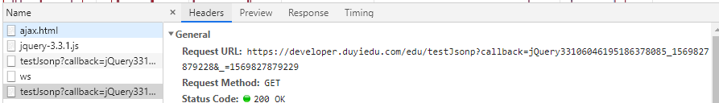
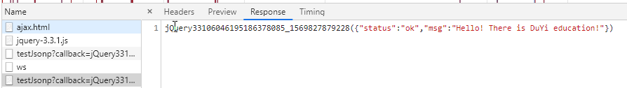
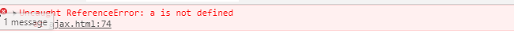

什么是跨域：a.com 域名下的js无法操作b.com或是c.a.com域名下的对象
为什么浏览器要引入跨域问题?
跨域问题来源于浏览器的同源策略，为啥要有这个策略呢？
为了安全。假设现在有a.com 和b.com 两个域，如果没有同源策略的限制，那么a.com就可以随随便便就去b.com 里面拿东西，甚至一些cookie信息（常用于存储登录信息），那么a.com只需要一段代码就可以获取你的cookie信息，从而冒充你的身份去登录网站。
当使用 AJAX 跨域访问资源 会受到同源策略影响，浏览器会报错。
啥算跨域?
页面本身都有协议，域名，端口。当协议，域名，端口这三个有任意一个不一样就算跨域。
这里的跨域访问资源是那些资源呢(只有访问这些资源时浏览器不会显示给我们)？
当访问在有src属性的，或者部分href属性的，即使跨域浏览器也会返回给我们。只有跨域访问上面的资源浏览器才会报错。
事实上跨域是可以发出请求，浏览器也是可以接受到返回给我们的信息。但接受到数据之后发现页面的域和请求的域不同，所以判定跨域，不会把结果传递给我们的代码。也就是说同源策略是浏览器的一个安全策略。
那当有需要去访问别人服务器接口等这样的需求时，怎样解决同源策略的这种限制也就是跨域问题。
有人会不理解为啥浏览器地址栏直接访问接口不是跨域，而AJAX访问接口就是跨域问题。
你的AJAX所在的所在的位置是一个域，而访问的服务器接口是一个域。那在地址栏里是在客户端向往服务器里发型请求只存在服务端一个域。例如：你打开一个地址可以说就是请求了一个域的内容，http://www.baidu.com/xxx,你可以理解为www.baidu.com,就是一个域，这个时候你在这个地址内发出一个请求http://www.baidukuayu.com/xxx,那请求的就是www.baidukuayu.com.这两个地址的主域不一样可以为第二个请求跨域了。
在说一下为啥本地文件访问服务器也会出现跨域
因为本地文件（file:///C:/Users/master/Desktop/canvas/变换.html）前面的file也是个协议，是用来浏览器打开本地文件使用的文件协议。这也就解释了为啥会跨域因为协议不同嘛。而大多数网络相关的请求都是http或者https协议，所以无法进行与网络相关的操作（跨域，ajax,访问cookie等）
so，我们想办法绕过这个file协议，基本上每个编辑器都提供了插件，他在你本地代码启动的时候，可以隐式的返回一个服务。 例如在vscode的live server插件，webStrom 直接点击走上角的小浏览器标识就可以隐式的打开一个服务。
解决跨域问题
使用jquery JSONP跨域
$.ajax({
url:"", //请求地址
type:"", //请求方式
data:"", //要发送给服务器的值
dataType:"jsonp",//要求服务器返回的数据类型
async："", //请求是否异步
success:function(data){ //成功的回调函数
......
}
})成功跨域请求数据


我们发现发送请求的地址后面自动加上一个callback参数，而请求回来的jsonp数据的格式正是发送时的callback（json）.
JSONP原理：动态创建script标签，使用script的src进行跨域
具体步骤：
我们知道带有src属性和部分的href属性是可以跨域的。但是href大多是样式。我们使用带src属性的。带src属性的有audio，video，img ,src,script等，但只有script是可以对数据进行控制，显示等。所以跨域的本质是使用script标签发出请求。例如引入jQuery的cdn: <script src = https://cdn.bootcss.com/jquery/3.4.1/jquery.js></script>
由于jsonp的原理就是使用script标签进行跨域，而script都是使用get方式请求数据。所以jsonp跨域只能是get方法，即使你设置的post方法，jQuery也会自动转为get方法。但如果你使用jsonp的方式并么有跨域，也就是同源，那么设置的get就是get，post还是post.
在使用jsonp返回数据时，可能是个对象，也可能是个数组，但无论是什么都要给这个对象或数组附上一个名字（引用）以便访问这个数据，例如var a = {name:'zhang'},否则让我们怎么使用这个数据。
var script = document.createElement('script');
script.src = "./another.js";
document.body.appendChild(script);
console.log(a);
--another.js文件内容。--
var a = {name:'f'} //假设后端返回的数据
由于动态创建的script是异步加载的。所以访问a为被定义。

这时候我们就想到回调函数了，等js文件加好了，自动执行岂不是更好，并且还隐藏了返回数据的引用。
var script = document.createElement('script');
script.src = "./another.js";
document.body.appendChild(script);
function aa(data){
console.log(data);
}--another.js文件内容。--aa({name:'dg'}) //假设后端返回的数据
像这样创建一个函数，返回的数据用上面定义的函数名包裹执行这个已经定义好的函数，并把要返回的数据作为参数传递给要执行的函数。等到js文件加载完自动执行这个函数。
那怎样让后端知道你前端定义好的那个函数名（名字要一致啊，不然怎么执行），这是我们就知道了为啥url后面跟着一个callback参数了。直接把你定义好的函数名拼接在你要访问地址的后面一块传给后端岂不快哉。
var $ = {
ajax : function (options) {
var url = options.url;
var type = options.type;
var dataType = options.dataType;
// 判断是否同源(协议,域名,端口是否相同)
var targetProtocol = ""; //目标接口协议
var targetHost = "" //目标接口的host(包括协议和端口)
// 如果url不带http,访问的就是相对路径(同源)
if (url.indexOf("http://") == 0 || url.indexOf("https://") == 0) {
var targetUrl = new URL(url);
targetProtocol = targetUrl.protocol;
targetHost = targetUrl.host;
} else {
targetProtocol = location.protocol;
targetHost = location.host;
}
// 判断是否是jsonp,如果不是jsonp,直接发送ajax
if (dataType == "jsonp") {
if (location.protocol == targetProtocol && location.host == targetHost) {
// 使用ajax
}
else { //跨域
// 随机生成一个callback,并生成对应的方法
var callback = "cb" + Math.floor(Math.random() * 1000000);
window[callback] = options.success;
// 创建script标签
var script = document.createElement('script');
// 如果url没有参数
if (url.indexOf('?') != -1) {
script.src = url + "&callback=" + callback;
}
else {//有参数
script.src = url + "?callback=" + callback;
}
// 将script添加到文档中
document.body.appendChild(script);
}
}
}
}